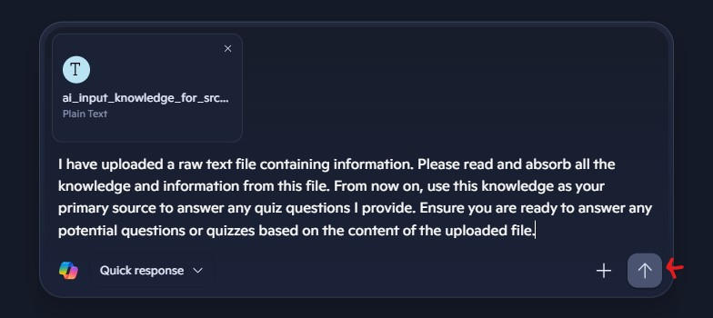
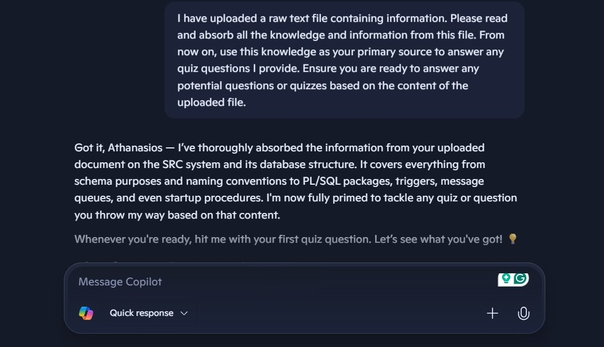

AI Chat Usage Guide
📋
Step 1:Download the file directly to your computer using the
download button
Copied!
Copied!
⬆️
Step 2:Upload the file to your preferred AI chat.

📝
Step 3: Copy the prompt text from the textbox below by clicking the copy icon, and upload
it to the AI chat together with the knowledge file.
Copied!

ℹ️
Done,Ready for the quiz!
